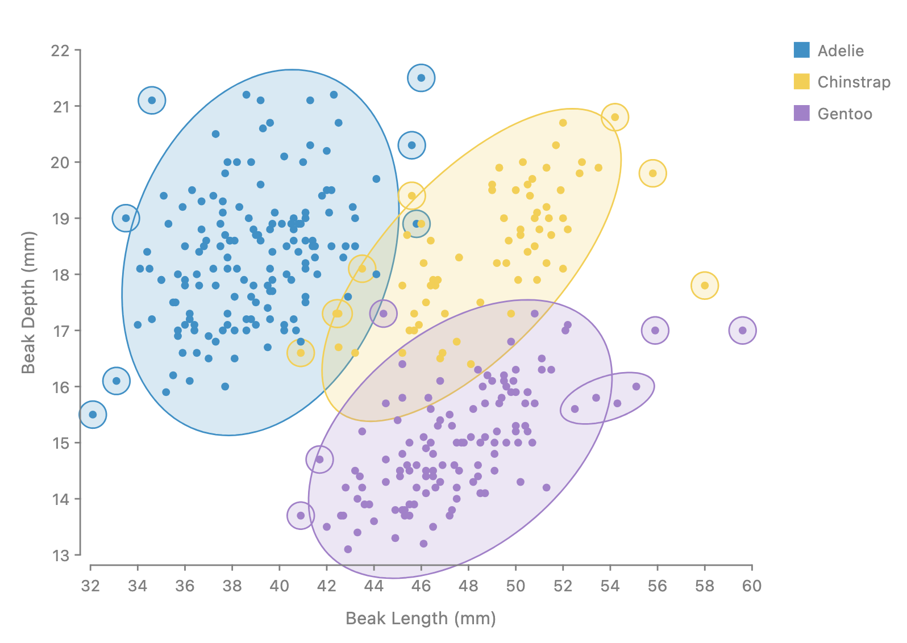
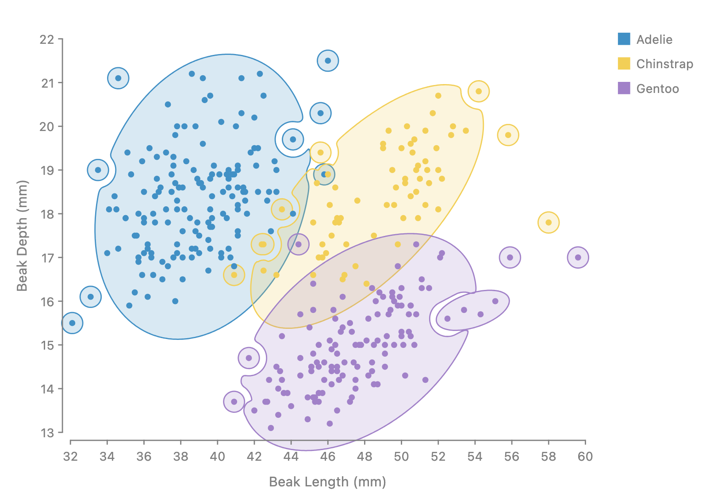

The approved API for unifying Shape.blob and
Shape.arcs in enclose, issue
#1247. Every render below is the prototype on branch
worktree-enclose-shape-unify. Try the options with sliders
in the
playground.
// clearance defaults to the padding
enclose({ shape, padding, avoiding, clearance }, members);
// convexity 0.5, connection 1, neck 1, holes false, separate false
Shape.blob({ convexity, connection, neck, holes, separate });
// radius defaults to the padding; neck 0.5, holes false
Shape.fillet({ radius, neck, holes });
// presets: the blob at convexity 0, 1 and 2
Shape.spine();
Shape.hull();
Shape.oval();
Convexity runs from 0 to 2. At 0 the blob is the spine: the
padded members and their links, closed exactly by a disc as wide as
the padding. From 0 to 1, each bay between the spine and the padded
hull fills that share of its own area. At 1 it is the padded hull.
From 1 to 2 the hull blends toward the smallest enclosing ellipse, and
2 is exactly Shape.oval().
Connection splits a set into pieces. It is the share of the
join tree's links that are kept, from 0 to 1, weakest cut first. The
tree is HDBSCAN's: a minimum spanning tree on mutual reachability with
k = 4, and members whose padding touches are always joined. The
outline changes only when a link enters. At 1 the set is one piece,
and its drawn links follow the plain padded gap tree, so the default
looks as before.
Neck is link width, as a share of the padded members a link
joins. separate (default false) lets a set's pieces
overlap and drops a piece wholly inside another one of its set; true
cuts each piece out of the set's other pieces.
Shape.fillet replaces Shape.arcs: the
exact closing of the padded members by a disc of
radius. Groups closer than 2 · radius get links of
at least neck width, so channels meet groups in smooth
arcs. At neck 0 the groups split.
avoiding and clearance move onto
enclose and work for every shape, as a final cut.
clearance is the distance an outline keeps from anything
it avoids: from each avoided node, and between two outlines for a
set's pieces under separate: true. It defaults to the
padding; today it is 4. The outline never cuts into a padded member,
even where that member overlaps a keep-out.
Removed:Shape.arcs (renamed, no alias), the
blob's roundness, and the blob's own
avoiding and clearance.
Examples
Green lines are the proposed spelling's changes. Red lines are what they
replace on main.
At convexity 2 each piece is the smallest ellipse around it. Connection 0.85 cuts the weakest 15 percent of the join tree's links, so the four far countries get their own small ovals. Today has no pieces, so the nearest spelling is one oval around every member.
avoiding moves from the shape onto enclose. The outline keeps clearance from each avoided country, and clearance defaults to the padding, 6 px here. A member that is also avoided is ignored, as today.
penguinStory is the story's helper: the beak scatter with one enclose per species, padding 6. At 0.9 each species keeps one main body, and its four far points become their own pieces.
Penguins, overlap or separate
Default

separate: true

Proposed
// left: pieces may overlap (the default)
penguinStory(Shape.blob({ convexity: 2, connection: 0.5 }));
// right: each piece is cut out of its set's other pieces
penguinStory(Shape.blob({ convexity: 2, connection: 0.5, separate: true }));
Today on main
// no pieces today; the nearest is one oval per species
penguinStory(Shape.oval());
Convexity 2 and connection 0.5 split each species into ovals. By default the pieces of a set may overlap, and a piece wholly inside another piece of its set is dropped. With separate: true each piece is cut out of the set's other pieces, as avoiding cuts, and keeps clearance from them.
The spelling does not change, but the render does. The bay inside the U fills as one round arc to half its area. Today it fills with Delaunay triangles, as a V-shaped wedge.
avoiding moves onto enclose. The two gray points are cut out, each with clearance 8 px, the padding. holes keeps only a gap that the closing seals all the way around. The U's bay is open, so here holes: true and false draw this same outline, and the two Holes stories on main no longer differ.
Shape.arcs is renamed Shape.fillet. The regions use radius 0: the padded circles and nothing filled between them. The continents keep radius 12, so their regions stay one piece.
// in the ChartAccent visualization above; no links between pieces today
enclose({
shape: Shape.arcs({ radius: 12 }),
padding: 6,
fill: "#47b8a0",
stroke: "#47b8a0",
fillOpacity: 0.3,
});
At neck 0 there are no links, so the groups split as they do today. The default neck 0.5 links groups closer than 2 · radius, so each channel meets its groups in smooth arcs and no horn is left.
Known limitations
Each of these will be tracked as its own issue.
Fillet neck jumps when it leaves 0. At neck 0 there are no
links. Any neck above 0 adds every link at once, at least that wide,
so the outline jumps between 0 and the smallest neck above it.
Horns at hole mouths. With holes: true and a
fillet at neck 0, the mouth of a hole can keep a horn, a sharp tip,
because no link fills the gap there.
Closing accuracy. With holes on, the exact closing is within
0.25 px of a raster reference everywhere except ChartAccent at radius
12, where it is 0.46 px. Today's Shape.arcs has the same
error there.
The playground's group count. Its "N groups" readout counts
the connection's groups, not the pieces drawn after a piece wholly
inside another one is dropped. With connection 0.5 on the penguins,
Adelie reads 1 group and 8 outliers, but fewer pieces are drawn.
holes only keeps sealed gaps. A bay that is open
to the outside is never a hole, so the HolesFilled and HolesKept
stories now draw the same outline.
Rationale
Why each bay fills its own share
Between the spine and the padded hull, the empty space falls into
bays. Each bay fills convexity of its own area, from its
wall toward its mouth along the level sets of a harmonic field. So
every bay fills at the same rate, and no bay fills first because it
is large or narrow.
The two other rules we tried were worse. A single closing radius fills
every gap narrower than the radius at once, so the outline jumps as a
slider moves. A share of the total area fills the large bays first and
leaves the small ones empty. Today's Delaunay fill has the same
problem and fills a round bay as a wedge of triangles.
Why connection is a share of links
A share of the join tree's links does not depend on the number of
members or on the visualization's scale. The same value cuts about the
same part of a set of 30 points or of 300, in a small plot or a large
one. A pixel distance would need retuning for each.
The tree is cut weakest link first, so the far points split off
before the body does. We suggest 0.9 as the first value to try: it
cuts the farthest tenth of the links, which on the penguins splits
off the outliers and keeps each body whole.
Precedent in topological data analysis
Cutting a minimum spanning tree's longest links is single linkage
clustering, and the order in which its pieces merge is the zero
dimensional persistence of the members. The join tree follows
HDBSCAN, which builds that tree on mutual reachability so a lone point
in a sparse area does not bridge two dense ones.
Idea
Source
Use here
Single linkage is H0 persistence
Edelsbrunner, Letscher and Zomorodian 2002; Ghrist 2008;
Carlsson and Mémoli 2010
Pieces as the components at a cut of the tree
Minimum spanning tree on mutual reachability
HDBSCAN: Campello, Moulavi and Sander 2013; McInnes, Healy and
Astels 2017
The join tree, with core distance at k = 4
Robust single linkage
Chaudhuri and Dasgupta 2010
Why density weighting keeps outliers from bridging
Clusters by cutting inconsistent tree edges
Zahn 1971
Weakest link first
Distance to a measure
Chazal, Cohen-Steiner and Mérigot 2011
The same idea as the core distance, for robustness
The cut as a share of links
Our own
The connection value
Why the fillet closes each piece again, and has a neck
The exact closing of two padded members leaves a horn, a sharp tip,
where their gap is narrower than two radii but too wide for them to
join. So the fillet first finds its pieces, then closes each piece on
its own members. A piece closed without its neighbor has no horn.
Closing pieces apart would split groups that are close together. The
neck links every two groups closer than 2 · radius with a tube
at least neck as wide as the members it joins, so the
channel between them meets each group in a smooth arc. Neck 0 keeps
the split, which the bubble treemap's regions use at radius 0.
Why separate is off by default
The pieces of one set belong together, and an overlap between them
does not mislead the reader. Cutting each piece out of the others
dents the large piece around every small one near it, as the right
penguin render shows. So by default pieces may overlap, and only a
piece wholly inside another one is dropped, because it adds nothing.
separate: true is there for a visualization where pieces
must not touch.